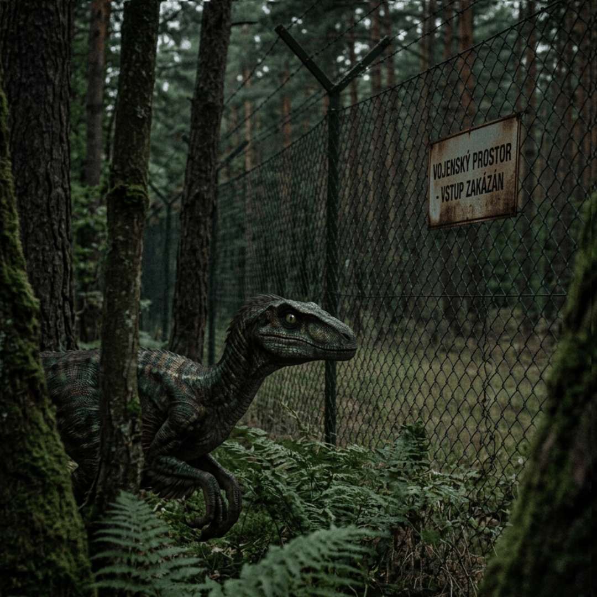

V uzavřených vojenských prostorech v Brdech u Příbrami prý probíhá tajný rewilding program, kde pomocí AI a DNA rekonstruovali „středočeského raptora“. Lidé prý v noci slyší divné zvuky, které rozhodně nejsou divoká prasata. Na mapách Google je tam prý jedna oblast úplně rozmazaná.